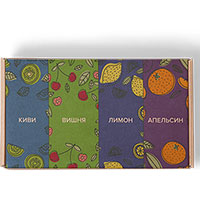
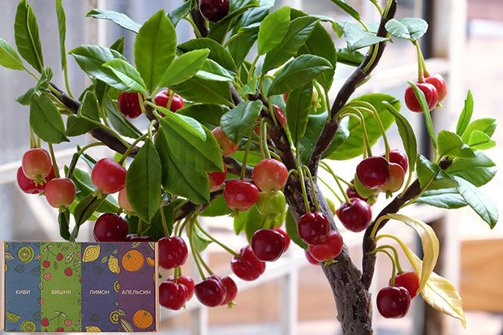
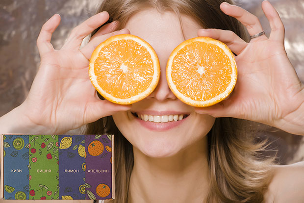
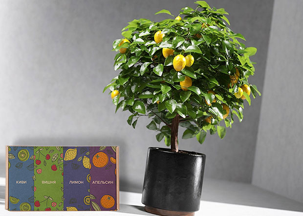

Экодар — гибридные мини-деревья
Экодар — гибридные мини-деревья, которые позволяют выращивать лимоны, апельсины, киви и вишню в домашних условиях. Сорт создан в сотрудничестве с немецкими, британскими, японскими и шведскими учеными, является призером выставки в Париже Eurculture 2018. Также гибридные деревья удостоены и других престижных наград (победитель выставки СельхозЭкспо 2018 в Белоруссии, Грамота участника WordAgroExpo Global в категории инновация года 2018 и другие). Если хотели без проблем собирать урожай экзотических фруктов прямо в квартире, можно попробовать. Но в чем же секрет сорта?
Секреты получения свежих продуктов
Покупать лимоны и апельсины в гипермаркетах опасно:
- южные фрукты не растут в наших широтах, а привозятся (т.е. их собирают еще зелеными, а затем плоды просто «дозревают» в пути);
- заграничные «сладости» везут до 4 недель (за это время половина продукции успевает прогнить и испортиться);
- полезные вещества и витамины при транспортировке расщепляются (плоды теряют до 80% «нужных» компонентов);
- импортные фрукты обрабатывают пестицидами (не только при выращивании, но и при хранении).
«Пластмассовые» лимоны и апельсины переполнены ГМО, вредными веществами и канцерогенами. Мини-деревья Экодар – способ получить на 100% натуральную продукцию, которую можно будет дать даже ребенку.
Выращивать плоды на садовом участке долго и сложно:
- деревья и кустарники нужно обрезать;
- вредители то и дело «норовят» уничтожить цветки и плоды;
- удобрения могут случайно «пересушить» плоды;
- заморозки становятся виновниками гибели цветков, так что завязи и плодов не будет;
- отсутствие пчел – причина проблем с опылением (цветков много, а плодов нет).
Есть риск, что человек проведет весь сезон на даче, а сможет собрать только лукошко плодов. Нужно учитывать, что в наших широтах с «капризным климатом» вообще вряд ли удастся вырастить киви, лимоны или апельсины. Возможно, стоит купить мини-деревья Экодар, чтобы получить шикарный урожай, но забыть о проблемах его «добывания».
Стандартные способы не работают:
- ждать, что «угостят» соседи или друзья слишком долго и сложно;
- выращивать деревья на участке самостоятельно не всегда удается;
- покупать плоды в магазине опасно;
- брать товар на рынке или «с рук» — подвергать себя и родных опасности.
Мини-деревья Экодар – шикарный урожай
Технология ЭКОДАР – результат длительных и многолетних исследований НИИ Сельского хозяйства РАН. Более 40 лет проводились разработки с участием ученых из разных стран и регионов. В результате удалось вывести сорт, который:
- не требует большого количества грунта (земли);
- обеспечивает плодовитость в 4 раза больше (по сравнению с обычными деревьями);
- дает до 20 плодов каждые 4 месяца;
- устойчив к условиям среды и влажности в 3,5 раза лучше (по сравнению с обычными деревьями);
- растет даже на зимнем солнце;
- требует не больше 5 минут в день на уход;
- дает до 16 кг продукции с одного куста;
- окупается буквально за 3 месяца.
Если нет дачи или загородного участка, на котором можно выращивать плодовые и ягодные культуры, стоит попробовать новинку. Отзывы про гибридные мини деревья Экодар хорошие. На официальном сайте представлены комментарии покупателей.
Что идет в упаковке
Комплектация товара подразумевает минимум затрат со стороны клиента. Производитель поставляет:
- семена, которые созданы без ГМО, канцерогенов, опасных веществ;
- грунт, ускоряющий созревание семян и процесс выращивания продукции;
- упаковки для первоначальной высадки деревьев.
При необходимости дополнительно можно заказать удобрения.
Правила высадки
Инструкция на мини-деревья Экодар проста:
- вскрываем упаковку и высаживаем семена в грунт (все поставляется производителем);
- ставим горшочек на подоконник и стараемся поливать по мере высыхания почвы;
- собираем первый урожай буквально через 3 месяца после высадки (или раньше).
Если есть вопросы по посадке, выращиванию, сбору плодов, можете задать их консультанту.
Аналоги
| Критерий | Экодар | Стандартные сорта |
|---|---|---|
| Растет быстро | Да | Нет |
| Плодоносит даже в квартире | Да | Нет |
| Не требует много света | Да | Нет |
| Устойчив ко вредителям | Да | Нет |
| Не требует опыления | Да | Нет |
| Плодоносит по 4 раза в год | Да | Нет |
| Дает урожай 4 раза в год | Да | Нет |
Выводы о гибридных сортах
В ходе исследования журналисты рассмотрели состав и особенности продукции. Редакция:
- изучила реальные отзывы про мини-деревья Экодар;
- проверила состав упаковки;
- запросила отзывы агрономов;
- узнала технические характеристики;
- проверила сертификаты качества;
- посмотрела видео о процессе роста и созревания.
В результате можно сделать вывод, что товар соответствует тем характеристикам, которые указывает производитель.
Где купить
Заказ продукции производится только на официальном сайте. Пока что товар не найти ни в магазинах для садоводов и дачников, ни в социальных сетях, пни на рынке. О сроках поставок продукции в супермаркеты и гипермаркеты ничего не сообщается. Сегодня цена на гибридные мини деревья Экодар снижена на время проведения специальной акции. Это значит, что можно заказать товар и получить скидку.
Пока что есть решения для выращивания лимонов, киви, вишен и апельсинов. Но в будущем производитель планирует разработать и другие сорта для домашнего урожая экзотических фруктов.
Мнение агронома
Смирнова Татьяна Геннадьевна, специалист по фермерскому хозяйству, г. Самара.
Использование технологии гибридных сортов известно еще с середины ХХ века. В советский период активно внедрялись передовые решения (сеялки, культиваторы, удобрения, семена). Сегодня технический прогресс не стоит на месте. Покупателям стараются предложить дополнительные решения, которые позволили бы без рисков собирать урожай. Мини-деревья – это одна из новинок в области сельского хозяйства. Пока что продукция «обкатывалась» в «пробных» условиях теплиц. Результаты использования потрясающие.
Отзывы покупателей
Елена, 59 лет
Брала, чтобы высадить на даче. Деревья крепкие. Даже удивлена. Первый урожай был больше, чем со старой вишни.
Матвей, 31 год
Заинтересовали эти гибридные мини-деревья Экодар. Официальный сайт где найти? Как не попасться на мошенников?
Сергей, 43 года
Матвей, держите ссылку на официальный сайт, я у них заказывал. Выращивали дома новый сорт. Собрали большой урожай апельсинов и лимонов. Спасибо вам большое за витамины.